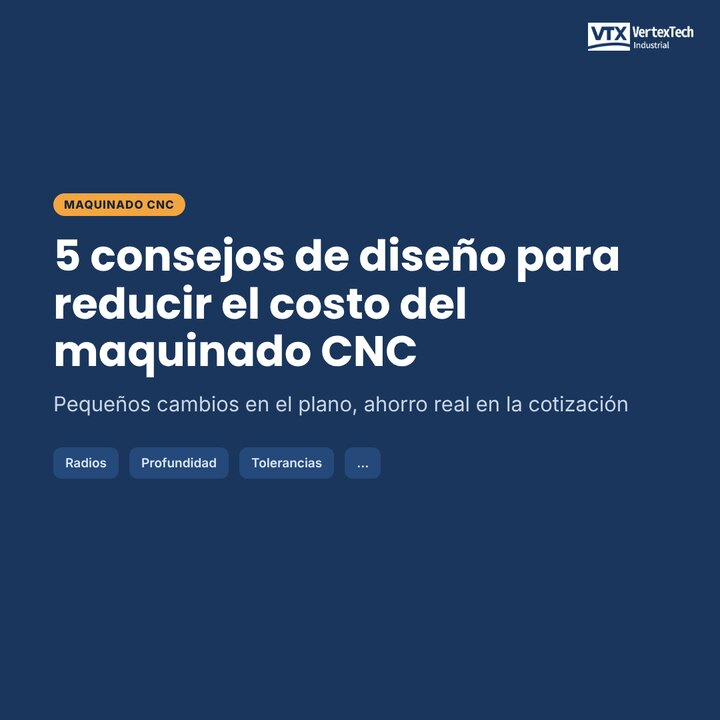
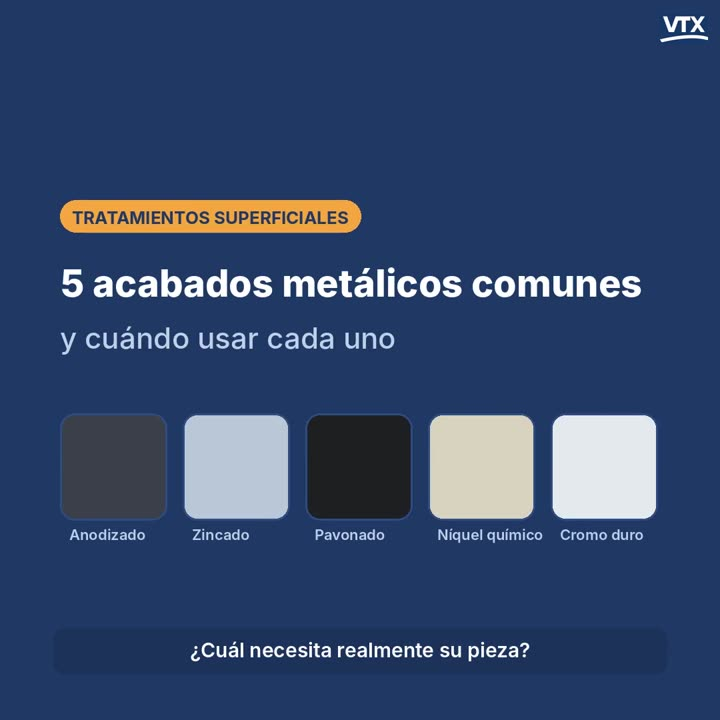

Tolerancias, materiales y consejos de diseño para fresado y torneado CNC.

Radios, profundidad de cavidades, tolerancias, roscas y espesor de pared: cinco reglas que abaratan las piezas maquinadas.
Qué acabado elegir y cómo especificarlo en el plano.

La misma pieza, cinco acabados distintos. Esto es lo que hace cada uno, dónde se queda corto y qué indicar en su plano.
Temple, nitrurado y cementado: qué hacen y cuándo usarlos.
Temple y revenido, carburizado, nitrurado, temple por inducción y recocido: qué hace cada uno y cuándo usarlo.